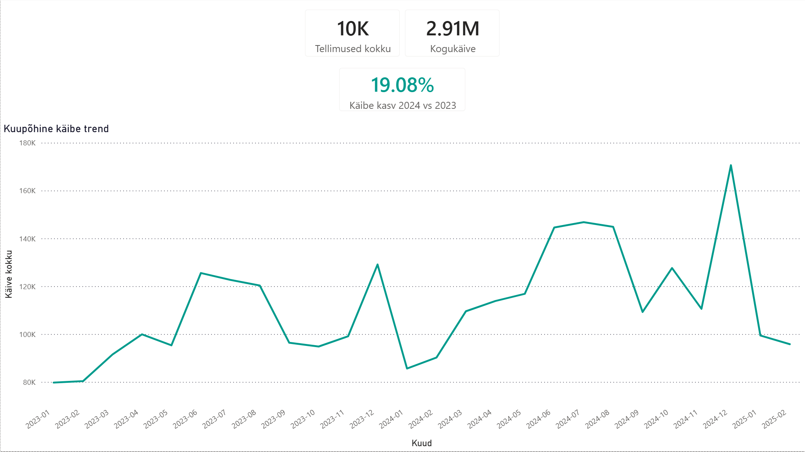

Flagship Power BI case study
Sales Performance Dashboard
Power BI
DAX
Business Reporting
Business question
How did UrbanStyle perform, and where is growth lagging?
~EUR 2.91Mrevenue analysed
~10Korders
19.08%2024 vs 2023 revenue growth
~13%Tartu growth, below company growth
Business answer
UrbanStyle grew overall. Tartu also grew, but at a lower rate than the company, which makes it the right location for deeper follow-up analysis.
Business action
Investigate Tartu product mix, average order value and customer segments against stronger-performing locations or channels.
Evidence status: documented in dashboard screenshots and project README files.
View Power BI evidence